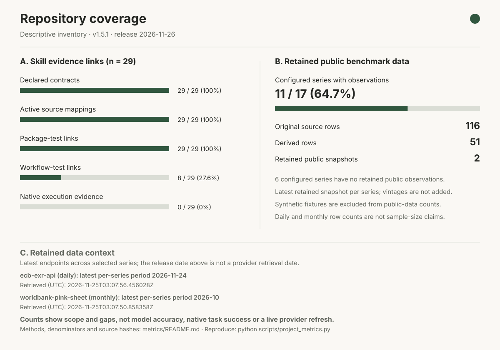

1. Choose one workflow
Extract the Markdown-only ZIP, open a Copilot or Gemini file and paste its full contents into an available Instructions field or approved conversation. Use the host guide for native imports.
Excel reconciliation, FP&A, forecasting and reporting for Microsoft 365 Copilot and Gemini. Choose a workflow and use the complete instructions.
Windows 11 · Markdown instructions · Optional Python and Power BI
Reproducible counts of the skill library and retained public data. These measure documented scope and evidence availability; they do not measure model accuracy or user adoption.

Extract the outer ZIP first, then import individual native skills separately. Copy the Excel agent profile text into your agent’s Instructions field.
{{SKILL_COUNT}} skills / Copilot edition
Read the Copilot setup guideTry a broader task or choose another focus.
Open this page from a complete repository download, or use a bundle below. Extract it before importing individual skills.
Import one skill at a time. Your account determines which tools it can use; an imported copy needs refreshing when its source changes.
Start with a task you already know. Use a small, approved sample and compare the result with your existing work.
Extract the Markdown-only ZIP, open a Copilot or Gemini file and paste its full contents into an available Instructions field or approved conversation. Use the host guide for native imports.
Use approved files and available tools. Local Python and Power BI workflows have a separate Windows guide.
Open the Windows guideCompare the package version, review changes and replace the imported copy when needed.
Check the update processKeep work data in your approved environment. This repository supplies general methods, documented public benchmark extracts and invented examples. Use approved company templates and accounts for business data.
Read the data boundaries